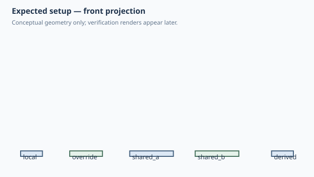

Forge qualification case
Implicit component parameters and shared dependencies
1. Test setup

Test goal
Verify that public component defaults become editable native parameters automatically, while parent Parameters/Expressions are reused rather than duplicated in the child.
Pass criteria
The saved SolidCraft design exposes Panel_width, Panel_2_width and shared_width; changing shared_width updates both directly-bound children and the derived half-width child without rerunning Python.
Mutation criterion
Change shared_width from 80 to 100 mm in the saved native design; widths must change from [40,40,60,80,80] to [40,50,60,100,100].
2. Implementation under test
Fixture source
"""Parameter scope qualification: implicit component parameters and inherited bindings."""
class Panel:
width = 40.0
DEPTH = 20.0
HEIGHT = 10.0
def build(self):
return Box(self.width, self.DEPTH, self.HEIGHT)
class ParameterScope:
shared_width = 80.0
def build(self):
local = Panel(name="local").move(x=0)
override = Panel(width=60.0, name="override").move(x=100)
shared_a = Panel(width=self.shared_width, name="shared_a").move(x=220)
shared_b = Panel(width=self.shared_width, name="shared_b").move(x=340)
derived = Panel(
width=self.shared_width / 2,
name="derived",
).move(x=460)
return local + override + shared_a + shared_b + derived
ParameterScope()
Public Forge API used
plain reusable class fields; Panel(width=self.shared_width); Panel(width=self.shared_width / 2)
Forge model represented by this fixture
Local numeric defaults become component-local Parameters; inherited Parameter/Expression inputs become external bindings to the existing parent dependency.
3. Generated SolidCraft relationship
Local component parameters are namespaced (for example Panel_width); inherited names such as shared_width remain unprefixed and are emitted once even when several child definitions use them.
Show generated relationship / command details
parameters.add
component.create
sketch.create
sketch.rectangle.two_point
sketch.finish
solid.extrude
component.activate
parameters.add
component.create
sketch.create
sketch.rectangle.two_point
sketch.finish
solid.extrude
component.activate
occurrence.move
parameters.add
component.create
sketch.create
sketch.rectangle.two_point
sketch.finish
solid.extrude
component.activate
occurrence.copy
occurrence.move
occurrence.move
component.create
sketch.create
sketch.rectangle.two_point
sketch.finish
solid.extrude
component.activate
occurrence.move3. Results
6. Evidence and references
Raw evidence
Show generated files and measurements
Reference models
These comparisons clarify concepts; Forge does not promise API compatibility with them.
- PythonSCAD: Primary API reference: normal Python objects/defaults should remain natural; users should not need a separate parameter-publication switch.
- SolidCraft: Native parameters and expressions are the source of truth for saved-design editability and rebuild behaviour.